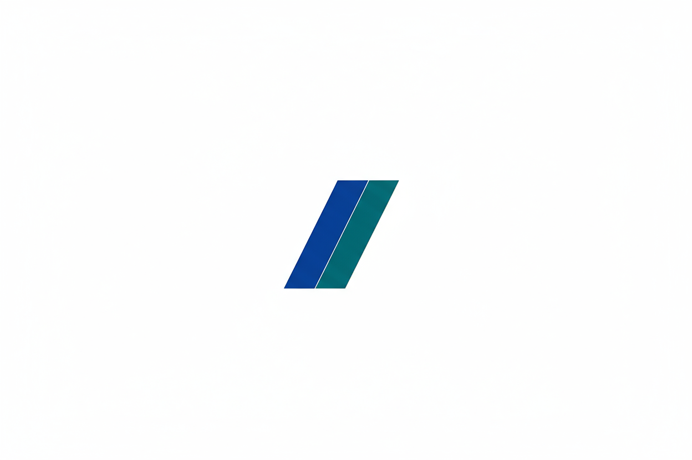

Logo Principal

Conceito do Design
O logo do Grupo MMB foi desenvolvido para representar os três pilares fundamentais da organização: Mobilidade, Multiproteção e Benefícios.
Simbolismo
O símbolo é composto por três círculos interconectados que formam uma estrutura unificada, representando:
- Conexão e Integração: Os três círculos simbolizam os três pilares do grupo trabalhando em harmonia
- Continuidade: A forma circular representa ciclos completos de proteção e cuidado
- Solidez: A estrutura interligada transmite estabilidade e confiança
Tipografia
A fonte utilizada é moderna e geométrica, transmitindo profissionalismo e inovação. O tagline "MOBILIDADE • MULTIPROTEÇÃO • BENEFÍCIOS" reforça claramente o propósito do grupo.
Paleta de Cores
O azul escuro (#001D3F) é a cor principal da marca, transmitindo confiança, segurança e profissionalismo. O branco é utilizado como cor de contraste para aplicações em fundos escuros.
Tipografia
Poppins
Bold - Utilizada para títulos e destaques
Light - Utilizada para textos corridos
A fonte Poppins foi escolhida por sua geometria moderna e excelente legibilidade, alinhando-se perfeitamente com a identidade visual contemporânea do grupo.
Variações e Aplicações
Versão Principal
Versão Negativa

Favicon
O favicon utiliza o símbolo da marca em formato SVG para garantir máxima qualidade em todas as telas e dispositivos.
Logo Principal

Conceito do Design
O logo foi projetado para ser abstrato, moderno e conceitual. A forma reflete os pilares da administradora: conexão, crescimento e segurança estrutural. O símbolo é formado por duas formas geométricas ascendentes que se apoiam mutuamente.
- A Estrutura Ascendente: As formas que apontam para cima simbolizam crescimento e um futuro seguro para o patrimônio dos associados.
- O Apoio Mútuo: A maneira como as duas formas se conectam representa a essência do mutualismo. A força vem da colaboração e da estrutura conjunta.
- Modernidade e Abstração: O design evita clichês do setor, posicionando a marca como uma empresa contemporânea, inovadora e focada no futuro.
Paleta de Cores
Tipografia
Poppins Bold
Poppins Light
A fonte Poppins foi escolhida por sua clareza geométrica e visual moderno, transmitindo profissionalismo sem ser excessivamente formal.
Variações e Aplicações
Versão Monocromática
Logo em uma única cor
Versão Negativa
Logo em fundo escuro
Ícone (Símbolo)
Apenas o símbolo
Favicon
O favicon utiliza o símbolo da marca em formato SVG para garantir máxima qualidade em todas as telas e dispositivos. Ele deve ser usado para representar o site em abas de navegador, favoritos e outros atalhos.
Logo Principal

Conceito do Design
O logo do Movimento Mais Seguro foi desenvolvido para representar proteção, mobilidade e união. A identidade visual transmite confiança, segurança e compromisso com o bem-estar das pessoas.
Simbolismo
O símbolo é composto por formas geométricas que representam:
- Proteção: As formas envolventes simbolizam segurança e cuidado
- Movimento: A estrutura dinâmica representa mobilidade e progresso
- União: Os elementos integrados transmitem coletividade e força
- Confiança: As cores sólidas e formas estáveis comunicam solidez
Tipografia
A fonte utilizada é moderna e robusta, transmitindo profissionalismo e segurança. O nome "MOVIMENTO MAIS SEGURO" é apresentado de forma clara e impactante.
Paleta de Cores
O verde (#00814B) é a cor principal da marca, transmitindo segurança, proteção e crescimento. O amarelo (#FFB500) representa energia e otimismo. O azul (#004885) reforça confiança e profissionalismo. O cinza (#4A4A4A) é utilizado para textos e elementos neutros.
Tipografia
Poppins Bold
Utilizada para títulos e destaques
Poppins Light
Utilizada para textos corridos
A fonte Poppins foi escolhida por sua geometria moderna e excelente legibilidade, alinhando-se perfeitamente com a identidade visual contemporânea do movimento.
Variações e Aplicações
Versão Horizontal Colorida
Versão Horizontal Branca

Versão Vertical Colorida

Versão Vertical Branca

Diretrizes de Uso
Espaçamento Mínimo
Mantenha sempre um espaço livre ao redor do logo equivalente à altura da letra "M" do símbolo. Isso garante que o logo respire e não seja comprometido por outros elementos visuais.
Tamanho Mínimo
O logo não deve ser reproduzido com largura inferior a 120px em meios digitais ou 30mm em materiais impressos, garantindo legibilidade e impacto visual.
Fundos Permitidos
- Versão Colorida: Use sobre fundos brancos ou claros
- Versão Branca: Use sobre fundos escuros ou coloridos
- Evite aplicar o logo sobre imagens ou fundos com muito contraste
Usos Incorretos
- ❌ Não altere as proporções do logo
- ❌ Não mude as cores do logo
- ❌ Não adicione efeitos (sombras, gradientes, contornos)
- ❌ Não rotacione ou distorça o logo
- ❌ Não use o logo sobre fundos inadequados
Favicon
O favicon utiliza o símbolo da marca em formato SVG para garantir máxima qualidade em todas as telas e dispositivos.
Logo Principal
Conceito do Design
O logo da Potere Seguro Auto foi desenvolvido para representar força, proteção e mobilidade. A identidade visual transmite confiança, segurança e compromisso com a excelência no segmento automotivo.
Simbolismo
O símbolo é composto por formas que representam:
- Força: A estrutura sólida simboliza potência e robustez
- Proteção: As formas envolventes representam segurança e cuidado
- Mobilidade: A dinâmica visual transmite movimento e agilidade
- Excelência: O design moderno comunica qualidade e profissionalismo
Tipografia
A fonte utilizada é moderna e robusta, transmitindo profissionalismo e segurança. O nome "POTERE" é apresentado de forma clara e impactante, reforçando a força da marca.
Paleta de Cores
O azul (#022a65) é a cor principal da marca, transmitindo confiança, segurança e profissionalismo. O laranja (#fba206) representa energia, dinamismo e inovação. O cinza (#4a5761) é utilizado para textos e elementos neutros.
Tipografia
Poppins Bold
Utilizada para títulos e destaques
Poppins Light
Utilizada para textos corridos
Variações e Aplicações
Versão Horizontal Completa Colorida
Versão Horizontal Colorida
Versão Horizontal Completa Branca
Versão Horizontal Branca

Versão Vertical Branca
Diretrizes de Uso
Espaçamento Mínimo
Mantenha sempre um espaço livre ao redor do logo equivalente à altura da letra "P" do símbolo. Isso garante que o logo respire e não seja comprometido por outros elementos visuais.
Tamanho Mínimo
O logo não deve ser reproduzido com largura inferior a 120px em meios digitais ou 30mm em materiais impressos, garantindo legibilidade e impacto visual.
Fundos Permitidos
- Versão Colorida: Use sobre fundos brancos ou claros
- Versão Branca: Use sobre fundos escuros ou coloridos
- Evite aplicar o logo sobre imagens ou fundos com muito contraste
Usos Incorretos
- ❌ Não altere as proporções do logo
- ❌ Não mude as cores do logo
- ❌ Não adicione efeitos (sombras, gradientes, contornos)
- ❌ Não rotacione ou distorça o logo
- ❌ Não use o logo sobre fundos inadequados
Logo Principal
Conceito do Design
O logo da Potere Consórcio foi desenvolvido para representar solidez, crescimento e realização de sonhos. A identidade visual transmite confiança, segurança e compromisso com o planejamento financeiro.
Simbolismo
O símbolo é composto por elementos que representam:
- Solidez: A estrutura robusta simboliza segurança financeira
- Crescimento: As formas ascendentes representam evolução patrimonial
- Realização: O design transmite conquista de objetivos
- Confiança: As cores premium comunicam excelência e credibilidade
Tipografia
A fonte utilizada é moderna e sofisticada, transmitindo profissionalismo e segurança. O nome "POTERE consórcio" é apresentado de forma elegante, reforçando a seriedade e excelência da marca.
Paleta de Cores
O azul escuro (#21315d) é a cor principal da marca, transmitindo confiança, segurança e profissionalismo. O dourado (#bf973d) representa excelência, valor e realização. O laranja premium (#f5a017) adiciona energia e otimismo. O cinza (#4b5661) é utilizado para textos e elementos neutros.
Tipografia
Heebo Regular
Utilizada para o texto "consórcio"
Poppins Bold
Utilizada para "POTERE" e destaques
Variações e Aplicações
Versão Horizontal Colorida
Versão Horizontal Azul + Dourado
Versão Horizontal Branca

Versão Horizontal Branca + Dourada
Versão Vertical Colorida
Versão Vertical Azul + Amarelo

Diretrizes de Uso
Espaçamento Mínimo
Mantenha sempre um espaço livre ao redor do logo equivalente à altura da letra "P" do símbolo. Isso garante que o logo respire e não seja comprometido por outros elementos visuais.
Tamanho Mínimo
O logo não deve ser reproduzido com largura inferior a 120px em meios digitais ou 30mm em materiais impressos, garantindo legibilidade e impacto visual.
Fundos Permitidos
- Versões Coloridas: Use sobre fundos brancos ou claros
- Versões Brancas: Use sobre fundos escuros ou coloridos
- Versão Dourada: Use sobre fundos escuros para destacar a sofisticação
- Evite aplicar o logo sobre imagens ou fundos com muito contraste
Usos Incorretos
- ❌ Não altere as proporções do logo
- ❌ Não mude as cores do logo
- ❌ Não adicione efeitos (sombras, gradientes, contornos)
- ❌ Não rotacione ou distorça o logo
- ❌ Não use o logo sobre fundos inadequados
Logo Principal
Conceito do Design
O logo do Juntos Pod+ foi desenvolvido para representar comunicação, conexão e positividade. A identidade visual transmite modernidade, proximidade e compromisso com conteúdo de qualidade.
Simbolismo
O símbolo é composto por elementos que representam:
- Microfone: O microfone integrado ao "O" simboliza podcast e comunicação
- Pod: A palavra "pod" destaca o formato de conteúdo em áudio
- Cruz Positiva (+): O símbolo de mais representa adição de valor, crescimento e positividade
- Juntos: A palavra "JUNTOS" reforça a ideia de comunidade e colaboração
Tipografia
A fonte utilizada é moderna e dinâmica, transmitindo acessibilidade e contemporaneidade. O nome "JUNTOS Pod+" é apresentado de forma clara e amigável, reforçando a proximidade com o público.
Paleta de Cores
O azul (#004885) é a cor principal da marca, transmitindo confiança, profissionalismo e comunicação. O amarelo (#ffb500) representa energia, positividade e otimismo. O preto (#1d1d1b) é utilizado para o texto "JUNTOS", conferindo solidez e contraste.
Tipografia
Poppins Bold
Utilizada para títulos e destaques
Poppins Regular
Utilizada para textos corridos
A fonte Poppins foi escolhida por sua geometria moderna e excelente legibilidade, alinhando-se perfeitamente com a identidade visual contemporânea do podcast.
Variações e Aplicações
Versão Horizontal Colorida
Versão Horizontal Branca

Diretrizes de Uso
Espaçamento Mínimo
Mantenha sempre um espaço livre ao redor do logo equivalente à altura da letra "J" do texto "JUNTOS". Isso garante que o logo respire e não seja comprometido por outros elementos visuais.
Tamanho Mínimo
O logo não deve ser reproduzido com largura inferior a 120px em meios digitais ou 30mm em materiais impressos, garantindo legibilidade e impacto visual.
Fundos Permitidos
- Versão Colorida: Use sobre fundos brancos ou claros
- Versão Branca: Use sobre fundos escuros ou coloridos
- Evite aplicar o logo sobre imagens ou fundos com muito contraste
Usos Incorretos
- ❌ Não altere as proporções do logo
- ❌ Não mude as cores do logo
- ❌ Não adicione efeitos (sombras, gradientes, contornos)
- ❌ Não rotacione ou distorça o logo
- ❌ Não use o logo sobre fundos inadequados
- ❌ Não separe o microfone do "O" ou o símbolo "+" do texto
Aplicações em Mídia
O logo do Juntos Pod+ foi especialmente desenvolvido para aplicações em plataformas de podcast e redes sociais:
- Capas de Podcast: Use a versão horizontal colorida em fundos claros
- Miniaturas de Episódios: Garanta contraste adequado com o fundo
- Redes Sociais: Adapte o tamanho conforme a plataforma, mantendo legibilidade
- Materiais Impressos: Prefira a versão colorida em alta resolução
Logo Principal
Conceito do Design
O logo do Mais Brasil Motorcycle foi desenvolvido para representar a cultura motociclista brasileira, união e paixão pelas estradas. A identidade visual transmite força, tradição e espírito de irmandade.
Simbolismo
O símbolo é composto por elementos clássicos da cultura motociclista:
- Círculo Externo: Representa unidade, proteção e a comunidade do moto clube
- Guidão: O guidão de motocicleta simboliza liberdade, controle e a estrada
- Farol Central: Representa o caminho iluminado e a visão clara do futuro
- Três Estrelas: Simbolizam excelência, qualidade e os valores do clube
- "MOTO CLUBE": Reforça a identidade de grupo e comunidade
- "MAIS BRASIL": Celebra a identidade nacional e o orgulho brasileiro
Tipografia
A fonte utilizada é bold e impactante, com estilo vintage que remete aos clássicos emblemas de moto clubes. O design circular e simétrico transmite tradição, força e respeito.
Paleta de Cores
O logo utiliza uma paleta monocromática (preto e branco) que é característica dos emblemas clássicos de moto clubes. O preto (#000000) transmite força, poder e seriedade. O branco (#FFFFFF) proporciona contraste, clareza e legibilidade.
Estilo Visual
Características do Design
- Estilo: Vintage / Clássico
- Formato: Circular (emblema)
- Elementos: Guidão, farol, estrelas
- Tipografia: Bold, maiúsculas
- Simetria: Perfeitamente simétrico
- Contraste: Alto (preto/branco)
O design segue a tradição dos emblemas de moto clubes americanos e europeus, com forte apelo visual e fácil reconhecimento.
Variações e Aplicações
Versão Preto e Branco (Principal)
Versão Branca (Fundos Escuros)

Diretrizes de Uso
Espaçamento Mínimo
Mantenha sempre um espaço livre ao redor do logo equivalente a 10% do diâmetro total do emblema. Isso garante que o logo respire e não seja comprometido por outros elementos visuais.
Tamanho Mínimo
O logo não deve ser reproduzido com diâmetro inferior a 80px em meios digitais ou 25mm em materiais impressos, garantindo legibilidade de todos os detalhes.
Fundos Permitidos
- Versão Preto e Branco: Use sobre fundos brancos ou muito claros
- Versão Branca: Use sobre fundos pretos ou muito escuros
- Evite aplicar o logo sobre imagens ou fundos com texturas complexas
- Mantenha sempre alto contraste entre o logo e o fundo
Usos Incorretos
- ❌ Não altere as proporções do logo
- ❌ Não adicione cores ao logo (manter monocromático)
- ❌ Não adicione efeitos (sombras, gradientes, brilhos)
- ❌ Não rotacione ou distorça o logo
- ❌ Não use o logo sobre fundos com baixo contraste
- ❌ Não remova ou altere elementos do emblema
- ❌ Não quebre a simetria do design
Aplicações Recomendadas
O logo do Mais Brasil Motorcycle foi especialmente desenvolvido para aplicações em:
- Patches e Bordados: Ideal para jaquetas, coletes e uniformes
- Adesivos: Perfeito para capacetes, motos e veículos
- Camisetas e Bonés: Excelente para merchandising do clube
- Bandeiras e Estandartes: Impactante em eventos e encontros
- Materiais Promocionais: Canecas, chaveiros, pins
- Mídia Digital: Redes sociais, site, assinaturas de email
Logo Principal
Conceito do Design
O logo do Movimento Mais Brasil foi desenvolvido para representar união, diversidade e crescimento coletivo. A identidade visual transmite inclusão, solidariedade e o espírito de colaboração que move o Brasil para frente.
Simbolismo
O símbolo é composto por elementos que representam a essência do movimento:
- Três Figuras Humanas: Representam a diversidade, inclusão e união do povo brasileiro
- Figura Central Amarela: Simboliza liderança, otimismo e energia
- Figura Azul (à esquerda): Representa confiança, estabilidade e seriedade
- Figura Verde (à direita): Simboliza crescimento, esperança e sustentabilidade
- Base Curva Verde: Representa movimento ascendente, progresso e crescimento contínuo
- "MOVIMENTO MAISBRASIL": Tipografia moderna que reforça a identidade nacional e o propósito do movimento
Tipografia
A fonte utilizada é moderna, limpa e geométrica, transmitindo contemporaneidade e acessibilidade. O texto "MOVIMENTO" em letras espaçadas acima do nome principal adiciona hierarquia visual e sofisticação. A combinação de azul e verde no nome "MAISBRASIL" reforça a dualidade de valores: confiança e crescimento.
Paleta de Cores
A paleta de cores do Movimento Mais Brasil utiliza as cores da bandeira brasileira de forma moderna e institucional. O azul (#004885) transmite confiança e profissionalismo. O amarelo (#FFB500) representa otimismo e energia. O verde (#00814B) simboliza crescimento e esperança.
Tipografia
Fonte Principal
Aa Bb Cc Dd Ee
Bold - Utilizada para o nome principal
Aa Bb Cc Dd Ee
Light - Utilizada para "MOVIMENTO"
A tipografia escolhida é moderna e geométrica, garantindo excelente legibilidade em todos os tamanhos e aplicando-se perfeitamente à identidade contemporânea do movimento.
Variações e Aplicações
Versão Colorida (Principal)
Versão Branca (Fundos Escuros)

Diretrizes de Uso
Espaçamento Mínimo
Mantenha sempre um espaço livre ao redor do logo equivalente à altura da letra "M" do nome "MOVIMENTO". Isso garante que o logo respire e não seja comprometido por outros elementos visuais.
Tamanho Mínimo
O logo não deve ser reproduzido com largura inferior a 200px em meios digitais ou 50mm em materiais impressos, garantindo legibilidade de todos os elementos.
Fundos Permitidos
- Versão Colorida: Use sobre fundos brancos, cinza claro ou cores neutras
- Versão Branca: Use sobre fundos escuros (preto, azul escuro, verde escuro)
- Evite aplicar o logo sobre imagens ou fundos com texturas complexas
- Mantenha sempre alto contraste entre o logo e o fundo
- Nunca aplique a versão colorida sobre fundos coloridos que interfiram nas cores do logo
Usos Incorretos
- ❌ Não altere as proporções do logo
- ❌ Não altere as cores do logo
- ❌ Não adicione efeitos (sombras, gradientes, brilhos)
- ❌ Não rotacione ou distorça o logo
- ❌ Não use o logo sobre fundos com baixo contraste
- ❌ Não remova ou altere elementos do logo (figuras, texto, base)
- ❌ Não separe o símbolo do texto
- ❌ Não recrie o logo com outras fontes ou cores
Aplicações Recomendadas
O logo do Movimento Mais Brasil foi especialmente desenvolvido para aplicações em:
- Materiais Institucionais: Apresentações, relatórios, documentos oficiais
- Comunicação Digital: Site, redes sociais, newsletters, assinaturas de email
- Eventos: Banners, backdrops, credenciais, sinalizadores
- Materiais Gráficos: Folders, flyers, cartazes, outdoors
- Brindes e Merchandising: Camisetas, canecas, cadernos, ecobags
- Mídia Impressa: Anúncios em jornais e revistas
- Vídeos e Animações: Vinhetas, intros, apresentações multimídia
Valores do Movimento
O Movimento Mais Brasil representa:
- União: Brasileiros trabalhando juntos por um objetivo comum
- Diversidade: Respeito e valorização das diferenças
- Inclusão: Oportunidades para todos, sem exceção
- Crescimento: Desenvolvimento contínuo e sustentável
- Esperança: Otimismo e confiança no futuro do Brasil
- Solidariedade: Apoio mútuo e cooperação
Logo Principal
Conceito do Design
O logo da Alpha Proteções foi desenvolvido para representar excelência, segurança e inovação no segmento de proteções veiculares. A identidade visual transmite confiança, modernidade e compromisso com a proteção completa.
Simbolismo
O símbolo é composto por elementos que representam a essência da marca:
- Símbolo Alfa (α): Representa liderança, excelência e o primeiro lugar em proteção
- Círculo de Proteção: Forma circular que envolve e protege, simbolizando segurança completa
- Movimento Fluido: Linhas dinâmicas que representam agilidade e modernidade
- Azul Institucional: Transmite confiança, profissionalismo e solidez
- Cinza Sofisticado: Adiciona elegância e equilíbrio visual
- Tipografia "alpha": Moderna e geométrica, reforça a identidade contemporânea
- Tipografia "PROTEÇÕES": Em cinza, complementa o design com clareza e profissionalismo
Tipografia
A fonte utilizada é moderna, geométrica e sans-serif, transmitindo contemporaneidade e confiança. O nome "alpha" em azul caixa baixa cria proximidade e acessibilidade, enquanto "PROTEÇÕES" em cinza maiúsculo adiciona seriedade e profissionalismo.
Paleta de Cores
A paleta de cores da Alpha Proteções é composta por duas cores principais que transmitem confiança e modernidade. O azul (#347BBF) é a cor institucional, representando segurança e profissionalismo. O cinza (#75808B) adiciona sofisticação e equilíbrio visual.
Tipografia
Fonte Principal
Aa Bb Cc Dd Ee
Bold - Utilizada para o nome "alpha"
Aa Bb Cc Dd Ee
Regular - Utilizada para "PROTEÇÕES"
A tipografia escolhida é moderna, geométrica e sans-serif, garantindo excelente legibilidade em todos os tamanhos e aplicando-se perfeitamente à identidade contemporânea da marca.
Variações e Aplicações
Versão Colorida (Principal)
Versão Branca (Fundos Escuros)

Diretrizes de Uso
Espaçamento Mínimo
Mantenha sempre um espaço livre ao redor do logo equivalente à altura da letra "a" do nome "alpha". Isso garante que o logo respire e não seja comprometido por outros elementos visuais.
Tamanho Mínimo
O logo não deve ser reproduzido com largura inferior a 180px em meios digitais ou 45mm em materiais impressos, garantindo legibilidade de todos os elementos, especialmente do símbolo alfa.
Fundos Permitidos
- Versão Colorida: Use sobre fundos brancos, cinza claro ou cores neutras claras
- Versão Branca: Use sobre fundos escuros (preto, azul escuro, cinza escuro)
- Evite aplicar o logo sobre imagens ou fundos com texturas complexas
- Mantenha sempre alto contraste entre o logo e o fundo
- Nunca aplique a versão colorida sobre fundos coloridos que interfiram nas cores do logo
Usos Incorretos
- ❌ Não altere as proporções do logo
- ❌ Não altere as cores do logo
- ❌ Não adicione efeitos (sombras, gradientes, brilhos)
- ❌ Não rotacione ou distorça o logo
- ❌ Não use o logo sobre fundos com baixo contraste
- ❌ Não remova ou altere elementos do logo (símbolo, texto)
- ❌ Não separe o símbolo do texto
- ❌ Não recrie o logo com outras fontes ou cores
Aplicações Recomendadas
O logo da Alpha Proteções foi especialmente desenvolvido para aplicações em:
- Materiais Institucionais: Apresentações, relatórios, propostas comerciais
- Comunicação Digital: Site, redes sociais, newsletters, assinaturas de email
- Documentos Contratuais: Contratos de proteção veicular, apólices
- Materiais de Vendas: Folders, catálogos, apresentações comerciais
- Sinalizadores: Fachadas, placas, totens, adesivos
- Uniformes: Camisetas, jalecos, crachás
- Veículos: Adesivação de carros, motos, frotas
- Brindes Corporativos: Canetas, cadernos, chaveiros, ecobags
- Mídia Impressa: Anúncios em jornais e revistas
Valores da Marca
A Alpha Proteções representa:
- Excelência: Ser o primeiro (alpha) em qualidade e atendimento
- Segurança: Proteção completa e confiável
- Confiança: Solidez e credibilidade no mercado
- Modernidade: Inovação e tecnologia em proteção veicular
- Profissionalismo: Atendimento especializado e qualificado
- Compromisso: Dedicação total com a proteção do cliente
Logo Principal
Conceito do Design
O logo da Soluções Corretora de Seguros foi desenvolvido para representar dinamismo, proteção global e excelência no mercado de seguros. A identidade visual transmite profissionalismo, confiança e modernidade, refletindo o compromisso da empresa com soluções completas e personalizadas.
Simbolismo
O símbolo é composto por elementos que representam a essência da marca:
- Esfera Dinâmica: Representa proteção global, abrangência e cobertura completa
- Linhas Fluidas: Simbolizam movimento, agilidade e adaptação às necessidades dos clientes
- Forma Circular: Transmite segurança, continuidade e proteção envolvente
- Azul Institucional: Transmite confiança, profissionalismo e solidez
- Preto no Texto: Adiciona seriedade, autoridade e credibilidade
- Tipografia "SOLUÇÕES": Bold e moderna, reforça a identidade contemporânea
- Tipografia "CORRETORA DE SEGUROS": Leve e elegante, complementa o design com clareza
Variações do Logo
Logo Colorido Completo
Versão principal para fundos claros
Logo Colorido Simplificado
Versão simplificada para aplicações menores
Logo Branco
Versão para fundos escuros
Paleta de Cores
A paleta de cores da Soluções Corretora é composta por duas cores principais que transmitem confiança e profissionalismo. O azul (#006DB0) é a cor institucional, representando segurança e solidez. O preto (#1A1414) adiciona seriedade e autoridade.
Tipografia
A fonte utilizada é moderna e geométrica, transmitindo contemporaneidade e profissionalismo. O nome "SOLUÇÕES" em preto bold cria proximidade e força, enquanto "CORRETORA DE SEGUROS" em fonte leve complementa o design com elegância e clareza.
Aplicações Recomendadas
O logo da Soluções Corretora foi especialmente desenvolvido para aplicações em:
- Materiais Institucionais: Apresentações, relatórios, propostas comerciais
- Comunicação Digital: Website, redes sociais, e-mail marketing
- Materiais Impressos: Cartões de visita, folders, banners
- Sinalização: Fachadas, placas, identificação de escritórios
- Uniformes: Camisetas, jalecos, crachás
- Brindes: Canetas, cadernos, agendas
Valores da Marca
A Soluções Corretora representa:
- Excelência: Compromisso com a qualidade e atendimento superior
- Confiança: Solidez e credibilidade no mercado de seguros
- Dinamismo: Agilidade e adaptação às necessidades dos clientes
- Profissionalismo: Atendimento especializado e qualificado
- Proteção Global: Soluções completas e abrangentes
- Inovação: Tecnologia e modernidade em seguros